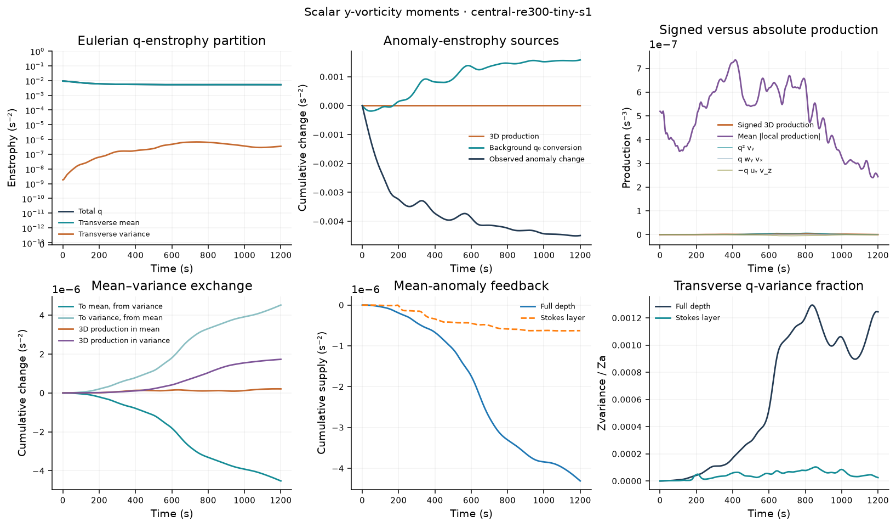
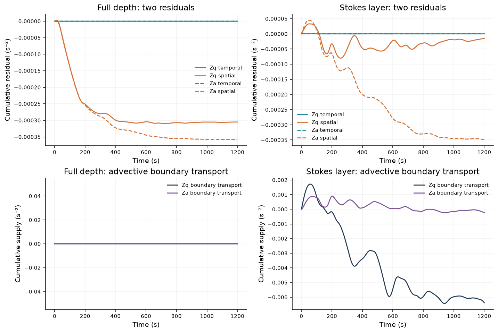
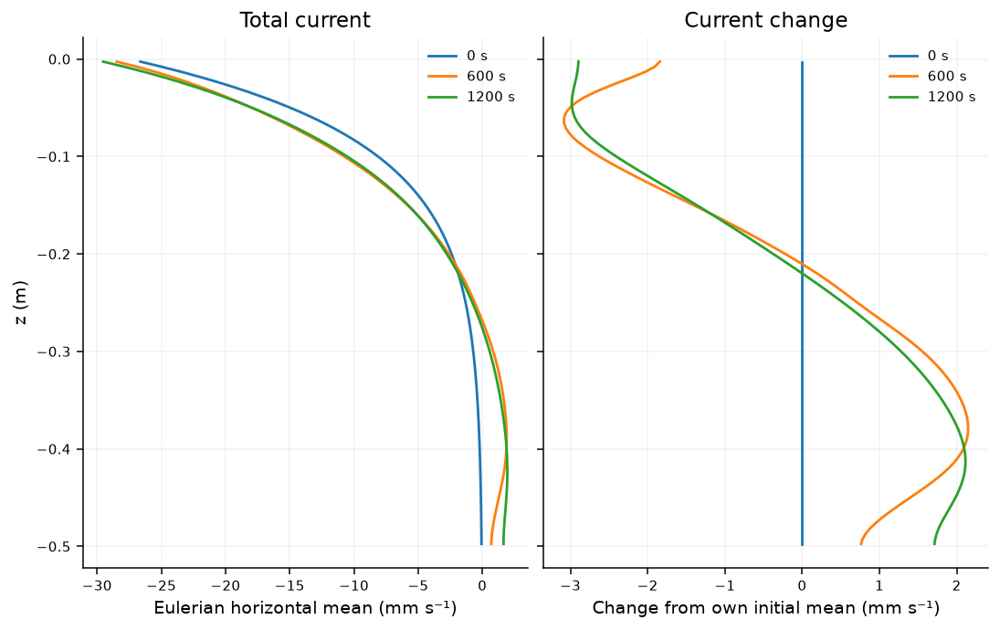

Verified completed calculation
central-re300-tiny-s1
Initial η=1e-06 · 1200 s
Global moments retain every diagnostic sample. Regional budgets are sampled every 20 records after integration on the full diagnostic grid. Published profiles select five times. Native 3D fields remain private.


